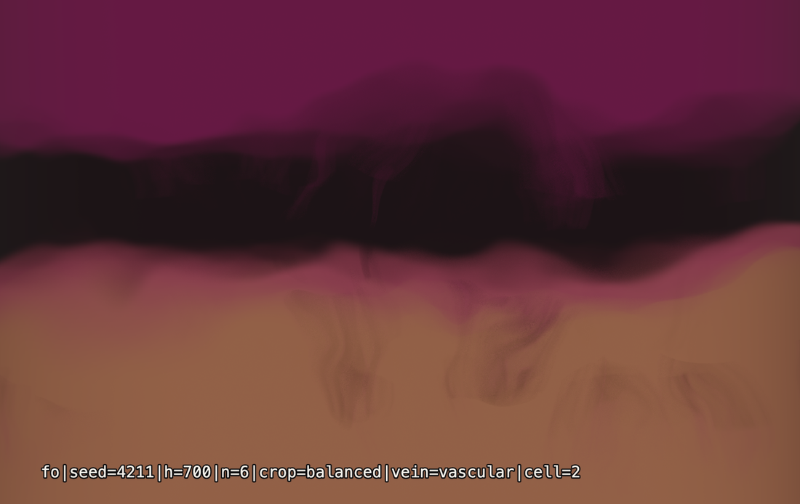
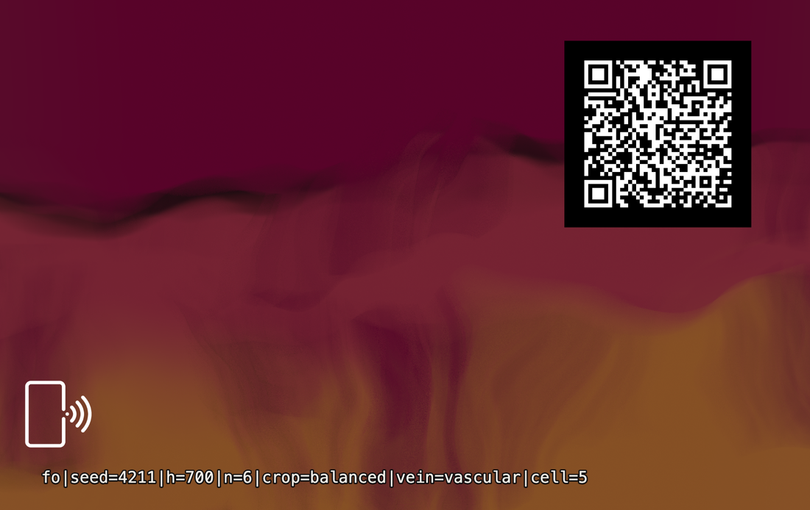

Vibe Cards · Card 010 · Parametric deck
A card that is a rule, not a picture. Six numbers are printed along the bottom of it. Type them in and the same picture grows again, on any machine.
It was called FIELD ORGANISM until 23 August 2026; the numbers on the card did not change.


That line is the whole card. It is every input the engine took. Nothing else was involved, and nothing random was left unwritten.
fo|seed=4211|h=700|n=6|crop=balanced|vein=vascular|cell=2
Type these numbers at persona500.com/leviathan
and the same picture grows again. Or open the link below. The address is already in it.
The fo at the front of the line is the engine's old initials. It stays,
because it is printed on the card.
Regenerate it It is on the deck, and runs at home Print it yourself
seed | The dice roll. Same number, same organism, every time. |
|---|---|
h | How tall the band is, in pixels. One band is grown, then cut into pieces. |
n | How many pieces the band is cut into. |
crop | The cutting pattern: slab, balanced, complex or grid. |
vein | The colour family. There are nine: wild, rothko, aged, vascular, blue, prismatic, nebula, planet, landscape. |
cell | Which piece is on this card, counting from zero. |
Its child: Pangea (card 012). Leviathan grinds the pigment, Bifurcata (card 011) grows the trees, and Pangea is what the two make together.
| Card size | 85.6 × 53.98 mm — a normal bank-card blank |
|---|---|
| Artwork | Exported at 2066 × 1319, the full bleed size |
| QR code | 20 mm on the back. It opens this page. |
| Tap mark | A small phone symbol on each face. Hold your phone there. |
| Licence | MIT |
What would you change about this card, or the engine behind it?
No account, no email, nothing to sign up for.